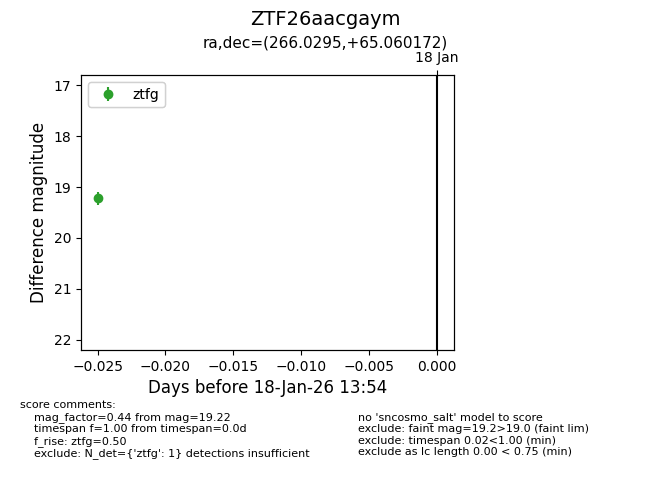
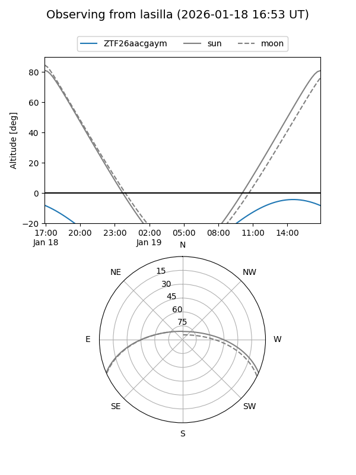

ZTF26aacgaym
Target ZTF26aacgaym at 2026-01-18 13:55
Aliases and brokers:
FINK: link
Lasair: link
ALeRCE: link
alt names
ZTF26aacgaym (ztf,fink_ztf)
Coordinates:
equatorial (ra, dec) = 266.0295,+65.06017
equatorial (HMS+DMS) = 17:44:07.08,+65:03:36.62
galactic (l, b) = (94.6877,+31.47450)
Flags:
Photometry:
last ztfg=19.22
1 ztfg detections
Lightcurve

Visibility


Additional plots